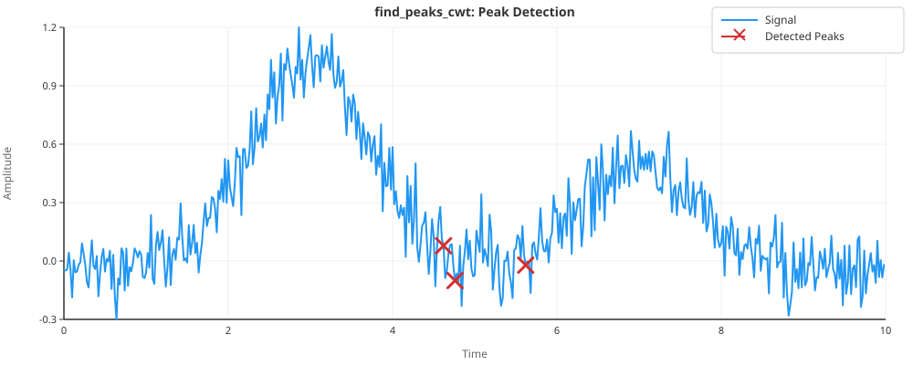
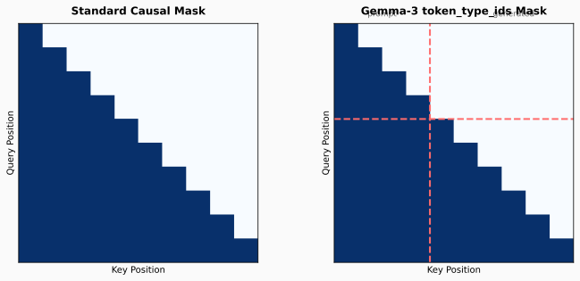
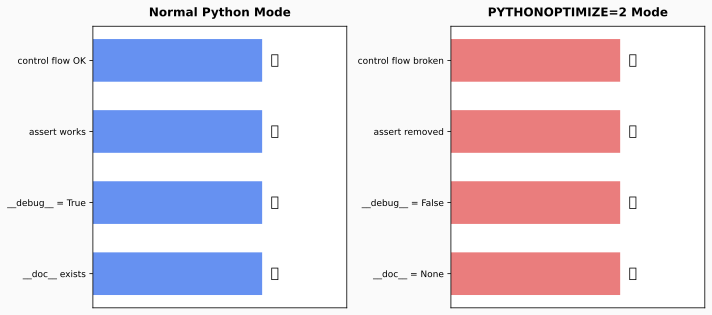
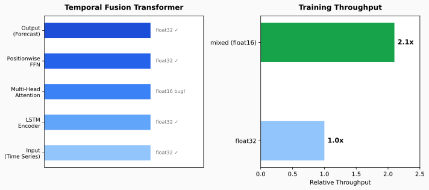
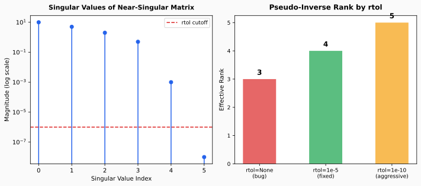
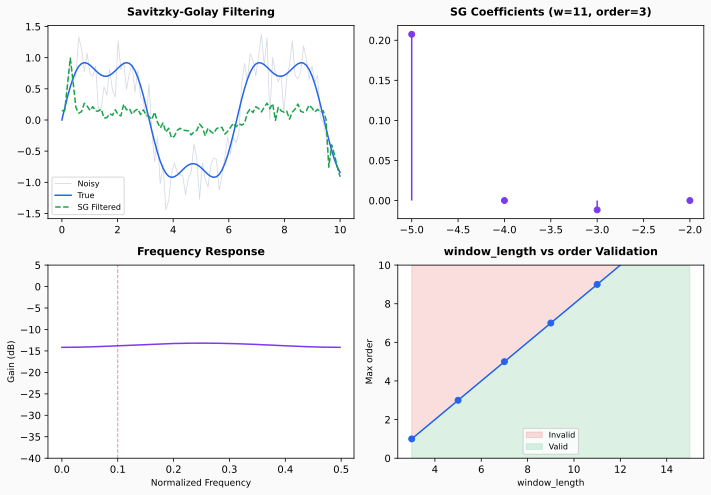

Behind every PR is a story — the science, the debugging, the fix. Browse the full collection of contribution deep-dives.

scipy.signal.find_peaks_cwtA single-character indexing bug that caused the CWT peak finder to read SNR at the wrong position along each wavelet ridge — silently dropping real peaks.

token_type_ids Support in TRLAdding token_type_ids for Gemma-3 in Hugging Face's TRL library to fix crashes during GRPO RL training with text-only completions.

PYTHONOPTIMIZE=2 Crash in C ExtensionsA segfault traced to assert-guarded control flow that disappeared under Python's -OO optimization flag — a classic Python gotcha.

Enabling mixed-precision (float16) training for the TFT model in darts by fixing dtype/device propagation and NaN-safe attention masking.

numpy.linalg.pinv with rtol=NoneA numerical stability bug where the Moore-Penrose pseudo-inverse included tiny singular values when rtol=None, producing incorrect results.

scipy.signal.savgol_coeffsMissing validation and incorrect normalization in Savitzky-Golay coefficient computation — a DSP classic that every signal processor uses.